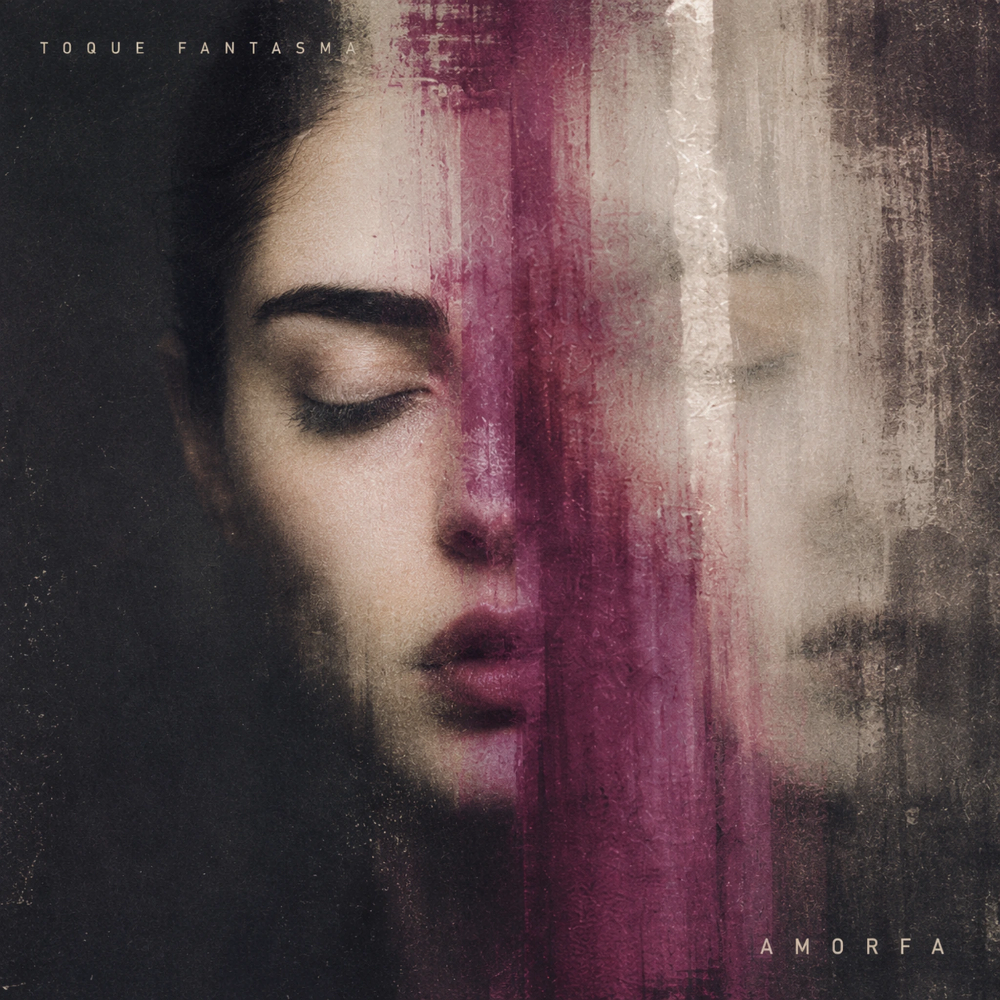

Toque Fantasma
O fim tratado como fenômeno físico: sinais, hábitos e respostas automáticas continuam chegando depois que a relação já perdeu forma.
Toque Fantasma organiza a ausência pela linguagem da comunicação. Notificações, chamada, espera, distância e linha morta aparecem porque o vazio não é silencioso; ele continua acionando comportamentos no corpo.
A produção abre espaço entre os elementos. Subgrave, pulsos lentos, ruído de linha e delays curtos deixam a voz exposta e criam uma música que parece aguardar algo sem garantir que alguma resposta venha.
Trip-hop · slowcore · post-punk mínimo · dream-pop
Faixas
15 faixas
01Toque Fantasma
02Não Me Chama de Louca
03Junho, de Novo
04Exorcismo Falho
05Eu Não Queria
06Lockdown
07Não Claro
08Afeto Não Suportado
09Cicatriz Circular
10Call Me
11Não Se Preocupa
12A Última Mentira
13Amarração (Faixa Bônus)
14Mente pra Mim (Faixa Bônus)
15Morrer de Amor (Faixa Bônus)

Arquivo AMORFA / 2026
O arquivo que aprendeu a cantar: escrita, direção, tecnologia e a construção da identidade AMORFA em uma conversa de longa forma.
Abrir AMORFA / CONVERSAS →